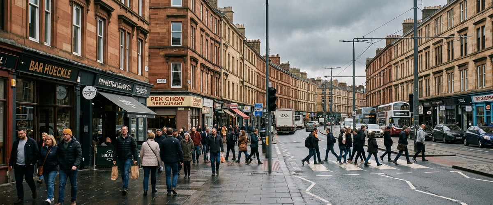
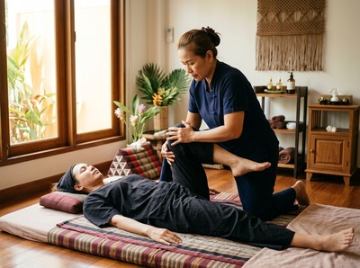
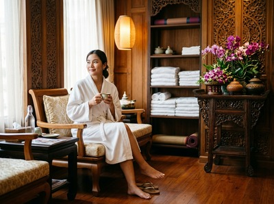

Thai massage in Finnieston fits naturally into the rhythm of a neighbourhood that has always known how to balance energy with ease.

Finnieston sits on the north bank of the Clyde, between Glasgow's West End and the city centre. It draws a mix of young professionals, creative workers, hospitality staff, and long-term residents. The area is home to Michelin-starred restaurants, the OVO Hydro, the SEC Centre, and a string of independent bars and studios. Serendipity Massage Therapy & Wellness is a short journey from all of it.
Serendipity is based on Hope Street in Glasgow's financial district. That makes it easy to reach from Finnieston, whether you work nearby, spend your evenings in the area, or just need a proper reset. The journey takes around five minutes by train from Exhibition Centre station on Argyle Street. A lunchtime or after-work session is genuinely realistic.

Finnieston attracts people who live at pace. Hospitality workers are on their feet all day. Creative professionals hunch over screens and studio desks. Event staff put in long hours around the OVO Hydro and SEC. All of them carry the physical cost of that work through their neck, shoulders, and lower back. A regular session at Serendipity addresses exactly that. You can book your appointment online and have something confirmed in minutes.
Serendipity offers a full range of treatments, each delivered by a trained therapist using techniques developed by head therapist Jariya Malone. Whether you need relief from muscle tension, recovery after sport, or proper rest, there is a treatment for you.
The quickest route is by train from Exhibition Centre station on Argyle Street. ScotRail runs frequent services on the Argyle Line into Glasgow Central Low Level. That takes around three to four minutes, then it is a five-minute walk to Hope Street.
If you prefer the bus, the 38 and 38A run from Argyle Street toward the city centre. Stops are close to Hope Street, and the journey takes around five minutes. Both options run throughout the day and evening, making it easy to fit a session around a shift or a workday.
Serendipity is at Floor 1, Suite 50, Central Chambers, 93 Hope Street, Glasgow G2 6LD. Hope Street is easy to find from the train or bus, and the studio is well signposted within Central Chambers. You can book your session in advance to secure your time before you travel.

Serendipity is a professional team practice, not a sole trader or a chain. Every therapist works to a consistent standard using techniques developed by head therapist Jariya Malone. These draw from traditional Thai massage and are adapted for precise, repeatable results.
Clients return regularly because the quality holds. The therapists are skilled, and each session is shaped around what the individual needs that day.
Finnieston has one of the most recognised skylines in Glasgow. The Finnieston Crane — a giant cantilever structure that once loaded steam locomotives onto ships for export — stands on the Clyde as a symbol of the city's industrial past. You can read more at Finnieston Crane on Wikipedia.
The neighbourhood has changed a great deal since those dockside days. But it keeps a grounded, local identity alongside its reputation as one of the city's best places to eat, drink, and live.
Serendipity is on Hope Street in Glasgow city centre. By train from Exhibition Centre station, the trip into Glasgow Central takes around three to four minutes. From there, Hope Street is a five-minute walk. Most people travelling from Finnieston reach the studio in under fifteen minutes.
The train from Exhibition Centre station on Argyle Street is the fastest option. ScotRail Argyle Line services run often and drop you at Glasgow Central Low Level, from which Hope Street is a short walk. Buses including the 38 and 38A also run from Argyle Street and take around five minutes. Both are reliable throughout the day and evening.
Same-day bookings depend on availability, so it is worth checking online. The online booking page shows current availability in real time. If you have a specific time or treatment in mind, booking a few days ahead is the safest option.
Hospitality and events work is hard on the body — especially the lower back, legs, and shoulders. Traditional Thai massage uses acupressure and assisted stretching to release deep muscle tension. It is a strong choice for anyone on their feet for long shifts. Sports massage works well if you have specific soreness or want to focus on recovery in certain areas. Your therapist will talk through your needs at the start of the session.
Serendipity is open seven days a week with morning, afternoon, and evening slots. Check current availability on the booking page or call the studio on 0141 673 6630. The team is happy to find a time that fits your schedule.